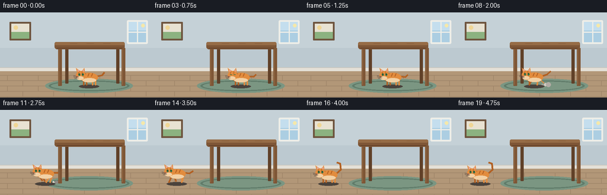
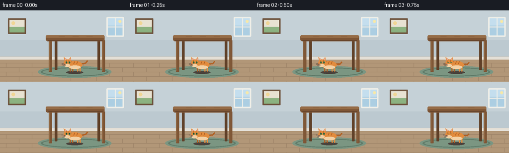

CODING AGENTS AS PIXEL WORLD MODELS
traex/Seed-2.1-Pro-0915 · dynamic_spatial_relationship_0015
点击播放 · 原生 RGB 像素
逐轮保存的候选
回放视频、检查图与代码变化。
每份候选均可单独播放。实际图片检查记录在下方工具轨迹中。
候选 01播放与检查图
点击播放 · 原生 RGB 像素


展开代码变化
--- 上一保存版本
+++ 本次保存版本
@@ -0,0 +1,241 @@
+"""Text-to-video: a cat waits under a table, then runs out to the table left.
+
+Renders 20 RGB frames (256x144 @ 4fps) with pure PIL geometry at 2x
+supersampling, then saves the contract artifacts via artifact_io.
+"""
+import math
+
+import numpy as np
+from PIL import Image, ImageDraw
+
+import artifact_io
+
+W, H, N, FPS = 256, 144, 20, 4.0
+S = 2 # supersampling factor
+SW, SH = W * S, H * S
+
+# ---------------------------------------------------------------- palette
+WALL = (197, 209, 215)
+WALL_BAND = (188, 201, 208)
+BASEBOARD = (228, 224, 215)
+FLOOR = (178, 151, 120)
+FLOOR_LINE = (158, 132, 104)
+RUG = (123, 150, 130)
+RUG_EDGE = (96, 124, 106)
+WOOD = (126, 86, 54)
+WOOD_LIGHT = (150, 108, 70)
+WOOD_DARK = (92, 60, 38)
+LEG_BACK = (96, 64, 40)
+SHADOW = (74, 66, 60)
+CAT = (226, 140, 62)
+CAT_DARK = (178, 96, 34)
+CREAM = (242, 208, 164)
+EAR_INNER = (232, 168, 158)
+EYE = (58, 116, 72)
+NOSE = (196, 104, 104)
+DUST = (214, 205, 194)
+
+
+# ------------------------------------------------------------- scaling helpers
+def sv(v):
+ return int(round(v * S))
+
+
+def box(b):
+ return tuple(sv(v) for v in b)
+
+
+def pts(points):
+ return [(sv(x), sv(y)) for x, y in points]
+
+
+def ellipse(draw, b, fill, outline=None, width=1):
+ draw.ellipse(box(b), fill=fill, outline=outline, width=sv(width))
+
+
+def rect(draw, b, fill, outline=None, width=1):
+ draw.rectangle(box(b), fill=fill, outline=outline, width=sv(width))
+
+
+def rrect(draw, b, radius, fill, outline=None, width=1):
+ draw.rounded_rectangle(box(b), radius=sv(radius), fill=fill,
+ outline=outline, width=sv(width))
+
+
+def line(draw, points, fill, width=1):
+ draw.line(pts(points), fill=fill, width=sv(width), joint="curve")
+
+
+def polygon(draw, points, fill, outline=None):
+ draw.polygon(pts(points), fill=fill, outline=outline)
+
+
+# ------------------------------------------------------------------- room
+def draw_room(draw):
+ rect(draw, (0, 0, W, 98), WALL)
+ rect(draw, (0, 60, W, 98), WALL_BAND) # subtle lower wall band
+ rect(draw, (0, 98, W, H), FLOOR) # floor
+ for y in range(106, H, 9): # plank seams
+ line(draw, [(0, y), (W, y)], FLOOR_LINE, 1)
+ for row, y in enumerate(range(106, H, 9)): # staggered plank ends
+ for x in range((row % 2) * 26 + 12, W, 52):
+ line(draw, [(x, y), (x, min(y + 9, H - 1))], FLOOR_LINE, 1)
+ rect(draw, (0, 93, W, 99), BASEBOARD) # baseboard
+ line(draw, [(0, 93), (W, 93)], (200, 196, 186), 1)
+
+ # window on the right wall
+ rrect(draw, (214, 13, 249, 53), 2, (238, 238, 232))
+ rect(draw, (217, 16, 246, 50), (172, 206, 226))
+ rect(draw, (217, 16, 246, 30), (196, 222, 238)) # brighter sky top
+ line(draw, [(231.5, 16), (231.5, 50)], (238, 238, 232), 2)
+ line(draw, [(217, 33), (246, 33)], (238, 238, 232), 2)
+ ellipse(draw, (238, 19, 244, 25), (245, 232, 170))
+
+ # framed picture on the left wall
+ rrect(draw, (16, 16, 52, 47), 1, (110, 84, 62))
+ rect(draw, (19, 19, 49, 44), (232, 226, 210))
+ rect(draw, (19, 33, 49, 44), (140, 178, 128)) # hill
+ ellipse(draw, (23, 22, 30, 29), (240, 214, 150)) # sun
+
+ # rug under the table
+ ellipse(draw, (76, 112, 224, 136), RUG)
+ ellipse(draw, (82, 115, 218, 133), RUG_EDGE)
+ ellipse(draw, (86, 117, 214, 131), RUG)
+
+
+# ------------------------------------------------------------------ table
+def draw_table_back(draw):
+ """Back legs, rendered before the cat so the cat can pass in front."""
+ for x in (110, 196):
+ rrect(draw, (x, 58, x + 5, 120), 1, LEG_BACK)
+
+
+def draw_table_front(draw):
+ """Front legs and tabletop, rendered over the cat (cat stays under)."""
+ for x in (98, 205):
+ rrect(draw, (x, 60, x + 6, 124), 1, WOOD)
+ line(draw, [(x + 1, 62), (x + 1, 122)], WOOD_LIGHT, 1)
+ rrect(draw, (92, 50, 210, 62), 4, WOOD)
+ rrect(draw, (92, 50, 210, 55), 3, WOOD_LIGHT) # lit top surface
+ line(draw, [(96, 60), (206, 60)], WOOD_DARK, 1) # shaded underside
+ for gx in (118, 146, 174): # faint wood grain
+ line(draw, [(gx, 52), (gx + 12, 52)], (140, 98, 64), 1)
+
+
+# -------------------------------------------------------------------- cat
+def draw_shadow(draw, cx, fy):
+ ellipse(draw, (cx - 17, fy - 1, cx + 17, fy + 5), SHADOW)
+
+
+def draw_dust(draw, cx, fy, phase):
+ for k in range(3):
+ a = phase - k * 0.9
+ fade = max(0.0, math.sin(a)) * max(0.0, 1.0 - k * 0.3)
+ if fade <= 0:
+ continue
+ dx = 14 + k * 5
+ r = 1.5 + k * 1.2
+ col = tuple(int(c * (0.45 + 0.55 * fade)) + 40 for c in DUST)
+ ellipse(draw, (cx + dx - r, fy - r - 1, cx + dx + r, fy + r - 1), col)
+
+
+def draw_cat(draw, cx, fy, phase, running, blink, tail_up, t):
+ bob = -2.4 * abs(math.sin(phase)) if running else 0.0
+ cy = fy - 13 + bob
+ lean = 1.6 if running else 0.0
+
+ # tail
+ if tail_up:
+ tail = [(cx + 13, cy - 2), (cx + 21, cy - 9),
+ (cx + 20, cy - 19), (cx + 14, cy - 21)]
+ else:
+ sw = math.sin(phase * 1.2 if running else t * 0.35)
+ tail = [(cx + 13, cy - 2),
+ (cx + 22, cy - 4 + 3 * sw),
+ (cx + (28 if running else 26), cy - 9 + 4 * sw)]
+ line(draw, tail, CAT_DARK, 3)
+
+ # legs (diagonal pairs via quarter-phase offsets)
+ for i, ox in enumerate((-9, -4, 6, 11)):
+ ph = phase + i * math.pi / 2
+ swing = math.sin(ph) * 5.5 if running else 0.0
+ lift = max(0.0, math.sin(ph)) * 3.5 if running else 0.0
+ col = CAT_DARK if i in (0, 1) else CAT
+ line(draw, [(cx + ox, cy + 5),
+ (cx + ox + swing, fy - lift)], col, 2.6)
+
+ # body
+ ellipse(draw, (cx - 15, cy - 8, cx + 15, cy + 8), CAT)
+ ellipse(draw, (cx - 11, cy + 1, cx + 12, cy + 8), CREAM) # belly
+ for sx in (-6, 0, 6): # tabby stripes
+ line(draw, [(cx + sx, cy - 7), (cx + sx - 2, cy - 2)], CAT_DARK, 1.4)
+
+ # head, slightly three-quarter view facing left
+ hx, hy = cx - 14 + lean * 0.5, cy - 4
+ polygon(draw, [(hx - 6, hy - 4), (hx - 8, hy - 12), (hx - 1, hy - 7)], CAT)
+ polygon(draw, [(hx + 2, hy - 7), (hx + 6, hy - 12), (hx + 7, hy - 4)], CAT)
+ polygon(draw, [(hx - 5, hy - 6), (hx - 6, hy - 10), (hx - 2, hy - 7)], EAR_INNER)
+ polygon(draw, [(hx + 3, hy - 7), (hx + 5, hy - 10), (hx + 5.5, hy - 6)], EAR_INNER)
+ ellipse(draw, (hx - 8, hy - 7, hx + 8, hy + 8), CAT)
+ ellipse(draw, (hx - 7, hy + 2, hx + 5, hy + 8), CREAM) # muzzle
+ line(draw, [(hx - 3, hy - 6), (hx - 4, hy - 2)], CAT_DARK, 1.2)
+ line(draw, [(hx + 2, hy - 6), (hx + 2, hy - 2)], CAT_DARK, 1.2)
+
+ # face
+ if blink:
+ line(draw, [(hx - 4, hy - 1), (hx - 1, hy - 1)], EYE, 1.2)
+ line(draw, [(hx + 2, hy - 1), (hx + 5, hy - 1)], EYE, 1.2)
+ else:
+ ellipse(draw, (hx - 4, hy - 3, hx - 1, hy + 1), EYE)
+ ellipse(draw, (hx + 2, hy - 3, hx + 5, hy + 1), EYE)
+ ellipse(draw, (hx - 3.2, hy - 2.2, hx - 2.2, hy - 1.2), (20, 30, 20))
+ ellipse(draw, (hx + 2.8, hy - 2.2, hx + 3.8, hy - 1.2), (20, 30, 20))
+ polygon(draw, [(hx - 7, hy + 1.5), (hx - 5, hy + 1.5), (hx - 6, hy + 3.2)], NOSE)
+ for wy in (hy + 2.5, hy + 4.5):
+ line(draw, [(hx - 6, wy), (hx - 12, wy - 1.5)], (90, 70, 60), 0.8)
+ line(draw, [(hx - 4, wy + 0.5), (hx - 10, wy + 1.5)], (90, 70, 60), 0.8)
+
+
+def smoothstep(a, b, x):
+ u = min(1.0, max(0.0, (x - a) / (b - a)))
+ return u * u * (3 - 2 * u)
+
+
+# ------------------------------------------------------------------ timeline
+def frame_state(i):
+ """Cat center x, feet y, gait phase, running flag, blink, tail flag."""
+ fy = 123
+ if i <= 5: # idle under the table
+ return 150, fy, 0.4 * i, False, (i == 3), False, i
+ if i <= 14: # running leftward
+ u = smoothstep(6, 14, i)
+ x = 150 - 108 * u
+ return x, fy, (i - 6) * 1.45, True, False, False, i
+ return 42, fy, (i - 15) * 0.5, False, (i == 17), True, i # arrived, left of table
+
+
+def render_frame(i):
+ img = Image.new("RGB", (SW, SH), WALL)
+ draw = ImageDraw.Draw(img)
+ draw_room(draw)
+
+ cx, fy, phase, running, blink, tail_up, t = frame_state(i)
+ if running:
+ draw_dust(draw, cx, fy, phase)
+ draw_shadow(draw, cx, fy)
+
+ draw_table_back(draw)
+ draw_cat(draw, cx, fy, phase, running, blink, tail_up, t)
+ draw_table_front(draw)
+
+ return np.asarray(img.resize((W, H), Image.Resampling.LANCZOS), dtype=np.uint8)
+
+
+def main():
+ frames = np.stack([render_frame(i) for i in range(N)])
+ artifact_io.save(frames, ".")
+ print(f"saved {N} frames, shape={frames.shape}")
+
+
+if __name__ == "__main__":
+ main()
可观测工具轨迹
实际执行的命令与返回图片。
命令 1exit 0
/bin/bash -lc 'cat prompt.txt; echo "-----"; cat GENERATION_RULES.md; echo "-----"; cat task_spec.json'
命令 2exit 0
/bin/bash -lc 'ls -la; find . -maxdepth 3 -type f | head -50; python3 -c "import artifact_io; print(artifact_io.__file__)" 2>&1; pip show pixelworld 2>/dev/null | head -5'
命令 3exit 0
/bin/bash -lc 'cat artifact_io.py'
命令 4exit 0
/bin/bash -lc 'cd . && python3 generate.py && ls -la frames | head -8 && ls -la pixels.npz inspection.png index.html'
保存候选 1 份；完成命令 4 次；可验证图片返回 0 张。原始 API 响应与完整日志保留在本地。